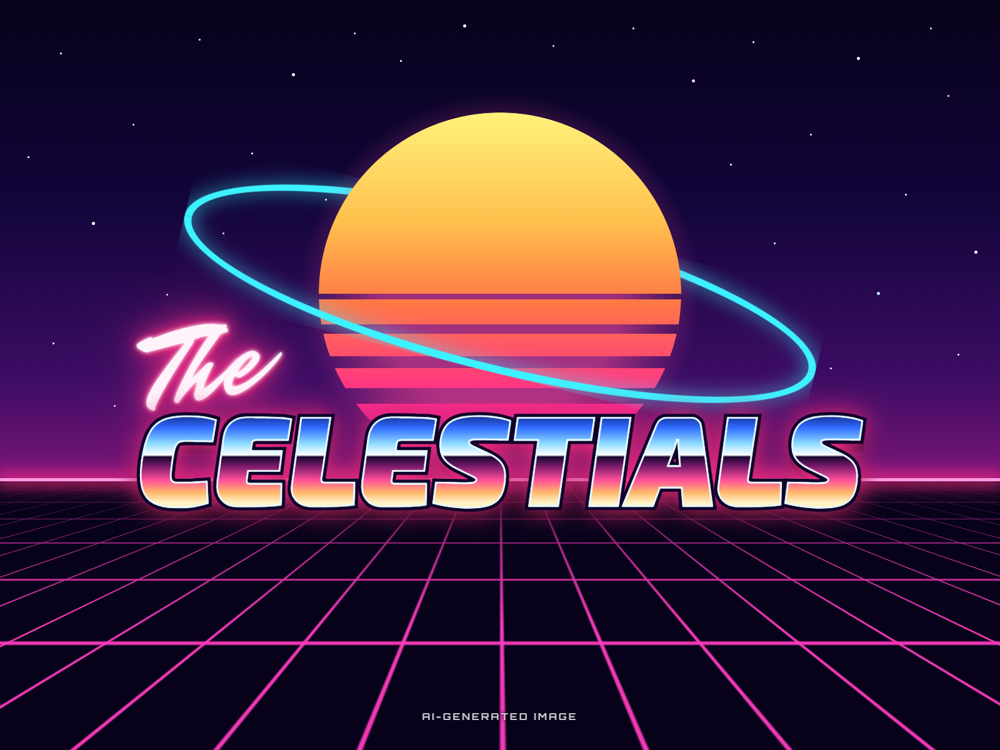
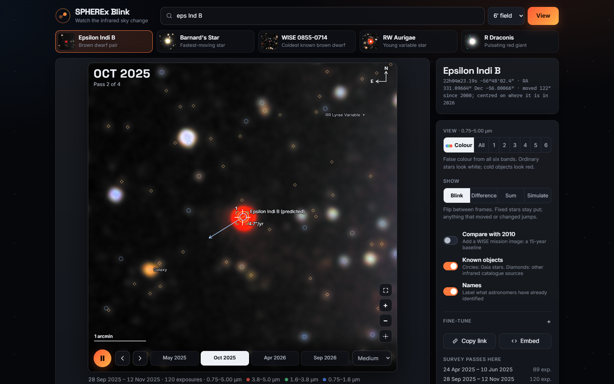
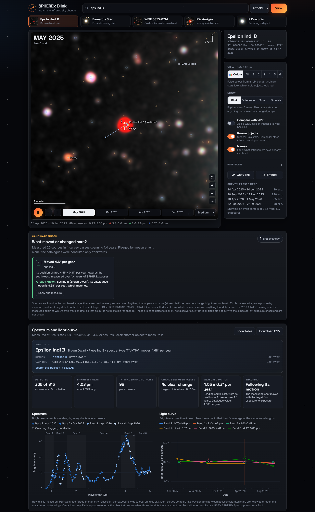
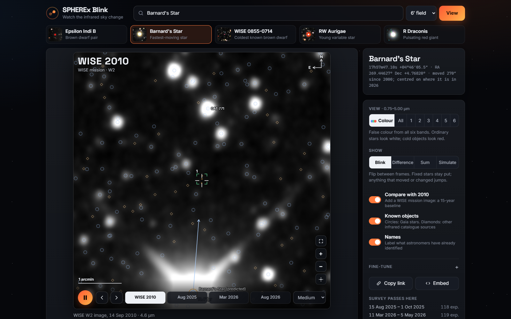

NASA Space Apps Challenge 2026 · Planet X and SPHEREx
Watch the infrared sky change.
Enter any sky position and blink NASA SPHEREx images taken months apart, so anything that moved or changed stands out.

Team The Celestials · Columbus, GA
Darian Lalla
Team logo: AI-generated image.

The challenge
NASA's SPHEREx telescope maps the whole sky every six months. Stars that are close to us drift between one map and the next, and some objects brighten or fade. They only show up when you compare the same patch of sky at different times.
The ask: a public web tool where anyone enters a sky position and sees that patch play like a little video. That is what we built.
The tool
Any position or name. Coordinates, or a name such as "Barnard's Star". Five challenge targets are one click away.
Cold objects glow red. Ordinary stars are white. This red dot is the brown dwarf pair Epsilon Indi B.
Blink between passes. Each button is one SPHEREx pass over this spot. Play, step, or change speed.
More ways to look. Subtract passes, add them, bring in a 2010 image, or mark the stars already known.
How you use it
The tool asks NASA's archive for every SPHEREx image of that spot. Nothing is prepared in advance, so new data appears as soon as NASA releases it.
The images are lined up, so fixed stars stay put and anything that moved jumps. The arrow shows where a catalogued star is heading.

You get its spectrum, its brightness over time, how fast it is moving, and what the catalogues already say about it.
Does it work?
| Target | What the tool measured | Independent check |
|---|---|---|
| Barnard's Star | Moves 9.95 ± 0.61 arcseconds a year | Gaia: 10.39 |
| Epsilon Indi B | Moves about 4.5 ± 0.3 arcseconds a year | Catalogue: 4.68 |
| WISE 0855−0714 | A faint red dot where it was predicted to be. The tool warns that a background star is blended with it and reports no motion. | Brightness as expected from WISE |
| RW Aurigae | In one year: about half again as bright at 0.9 µm, 46% fainter at 4 µm | Known irregular variable |
| R Draconis | Too bright for SPHEREx, so it is followed through its outer glow: a 45% change in three months | Known pulsating giant |
Measured from public SPHEREx data, 13 to 15 November 2026. Star brightness agreed with the 2MASS and WISE catalogues to about 2% for nine test stars.

Barnard's Star, 2010 to now. The bright star at the bottom is where WISE saw it in 2010. The marked spot at the centre is where SPHEREx sees it today.
Made possible by open data
Sends a sky position. Colours, blinks and subtracts the images itself, so the controls respond at once.
Python. Finds the exposures, downloads small cut-outs, lines them up, and measures every object.
Holds every SPHEREx image. We read only the part of each file we need, about a twentieth of it.
Beyond the brief
Pluto was found by blinking two images. The tool does the same by measurement: it measures every object in every pass, flags what moved or changed, and only then asks the catalogues what is already known.
Code and documentation
github.com/Darskye/spherex-blink
Team The Celestials: Darian Lalla. Built with AI assistance (Claude); the README says where and how. Not affiliated with or endorsed by NASA.